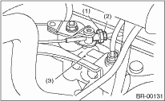

BRAKE > Hill Holder
Perform inspection of stop, start performance of the hill holder on a hill with an incline of 3° or more.
1. If the vehicle does not stop:
Tighten the adjusting nut of the PHV cable.
2. If the vehicle does not advance properly:
• Case A — If the hill holder is released after the clutch is connected (engine stalls easily):
loosen the adjusting nut gradually until a smooth start is possible.
• Case B — If the hill holder is released before the clutch is connected (vehicle moves backward):
Tighten the adjusting nut so that the hill holder releases after connecting the clutch pedal. (Case A) then perform the same adjustment as for Case A.
CAUTION:
When turning the adjusting nut, always make sure that the PHV cable does not turn.

|
(1) |
Adjusting nut |
|
(2) |
Lock nut |
|
(3) |
PHV |
3. Tighten the lock nut.
Tightening torque:
3.5 N·m (0.36 kgf-m, 2.6 ft-lb)